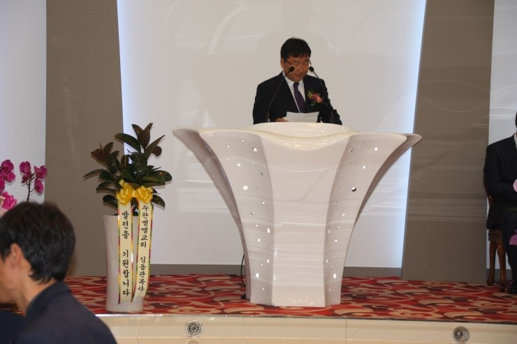

대광그룹 회사창립 13주년 (대광스치로폴 화재복구 10주년) 기념행사
- 일 시 : 2014년 05월 24일 오후 6시
- 장 소 : 퀸스컨벤션 2층 빅토리아홀
100년 기업을 꿈꾸는 대광이 창립 13주년이 되었습니다.
대광피앤에스(이하 대광그룹)의 창립 13주년 기념행사 겸 대광스치로폴 화재복구 10주년 기념행사를 위해 대광그룹 5개사 임직원이 한자리에 모였습니다.
이날 행사는 대광그룹 창립 13주년 기념을 넘어, 대광그룹 도전의 역사 속에서 빠질 수 없는 대광스치로폴 화재복구 10주년 행사였기에 더욱 뜻 깊고 의미 있는 행사였습니다.
10년 전 갑작스레 닥쳐온 엄청난 시련을 극복했기에 오늘날 대광그룹은 존재할 수 있는 것이고 그때의 아픔은 이제 대광의 가장 큰 원동력이 되고 있습니다.
이날 한갑호 대표이사는 인사말에서 “대광이 10년 전 화재를 극복했던 정신과 열정으로 이제 ‘사람을 중심으로 품질을 생명으로 여기는 100년 기업을 꿈꾸는 대광’이 되자”고 말하며, 행사에 참석한 임직원들의 하나 된 정신을 강조했습니다.
